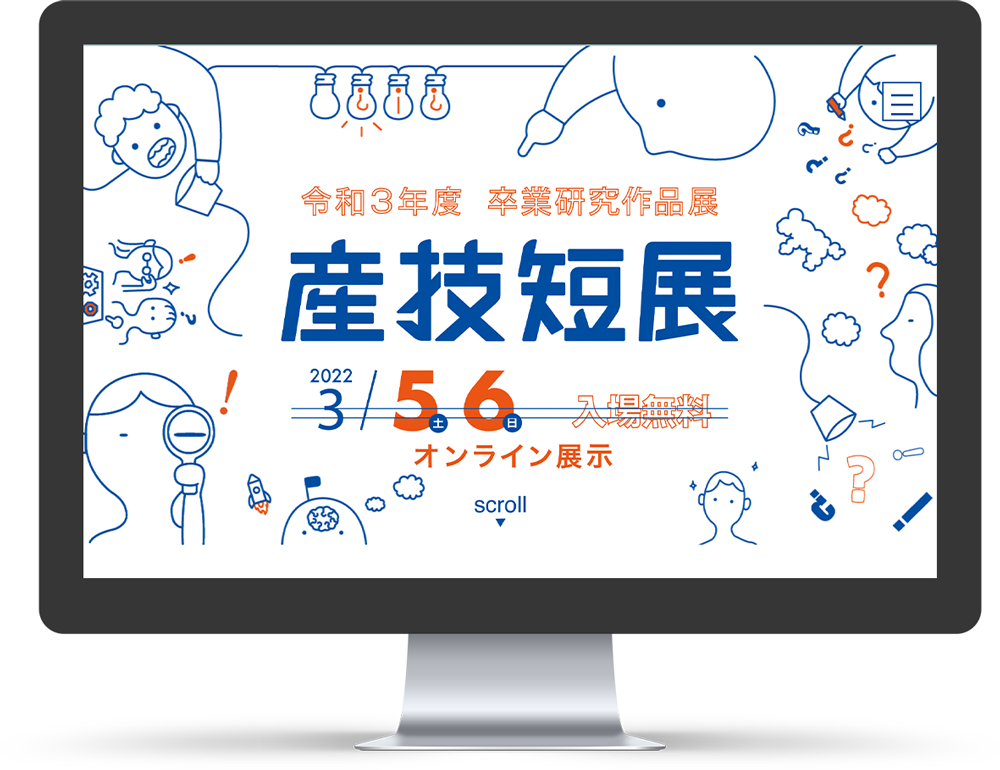

卒業研究展・特設サイト（共同制作）
「令和３年度 産技短展」
1学年
授業外制作


- 制作目標
- 産技短卒業制作作品展示会の告知webサイトの制作
- ターゲット
- 卒業生の家族、就職先企業関係者、学校近隣住民
- コンセプト
- 誰にでも伝わりやすく、見やすく、親しめるサイト
本学が開催する、卒業研究作品展の広報サイトのチーム制作を行いました。 依頼された掲載内容記事をもとに、予測される卒業研究展の訪問者（入学志望の中高生、卒業生の家族）のような広範囲なターゲットに、わかりやすく・親しみやすいwebサイトになるように設計しました。
制作過程
1.依頼内容から情報設計
先生から学校内の卒業制作作品展示会の告知webサイトの依頼を受け、メンバー内でそれぞれの制作担当を決めた。依頼内容から、コンセプト「親しみやすく情報が伝わりやすいwebサイト」と、 以下の通りのターゲットを確認した。
- 卒業生の家族、知人
- 就職先の企業関係者
- 近隣住民
ターゲット
2.モックアップ
モックアップを制作し、共同作業でレイアウトの細かい調整を行った。 この時、サイト内に使用する素材をチームメンバーに制作してもらった。
3.制作
モックアップをもとに、コーディングを行う。今回は共同作業により、PC版・スマートフォン版のコーディングを二手に分け、機種別で異なるCSSを読み込むという仕組みで制作を行なった。
4.修正
コーディングをまとめ、細かい表示不具合の修正をした。また、何度か先生へ提出し、記載内容に必要なものや、サイトロゴの修正など随時行なった。
5.納品
Webサイト完成後、サーバーへアップロード。インターネット上へ公開された。依頼者の先生からは、誰でも見やすく伝わりやすいサイトになっていると講評をいただいた。
ポイント
予測される卒業研究展の訪問者（入学志望の中高生、卒業生の家族）のような広範囲なターゲットに、わかりやすく、親しみやすいwebサイトになるように設計しました。